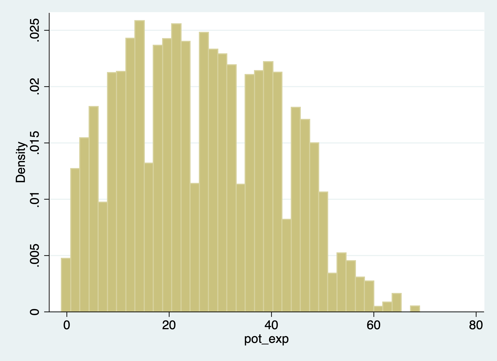

Chapter 1 Creating Data
The generate and replace will be the workhorses of creating and modifying variables We’ll deal with generating binary variables. We’ll look into missing data and how to handle it. Note: Please do not label your missing data, it just is a pain to deal with later The egen command is also a very practical and useful (I wish other software packages had this type of command). We’ll deal with strings and converting between numerics and strings.
1.1 Creating and changing variables
One of the most basic tasks is to create, replace, and modify variables. Stata provides some nice and easy commands to work with variable generation and modification relative to other statistical software packages: generate and replace. These will be the workhorses for the creation and modification of variables.
As we go through Mitchell’s Chapter 6, we’ll see that these are not the only two commands we will utilize. For example, Stata has a very helpful command called egen. It can be used to create new variables from old variables, especially when working with groups of observations. Egen becomes even more helpful when it is combined with bysort. We can sort our group and find the max, min, sum, etc. of a group of observations, which can come in handy when we are working with panel data. Furthermore, using indexes can make our generation commands more useful for creating lags or rebasing our data.
1.1.1 Generate command
The generate or gen command is one command that you may already have plenty of experience with, but there are some helpful tips when working with generate. What we’ll do first is to create a new variable called potential experience and potential experience squared.
Let’s look at ages for workers earning weekly wages.
cd "/Users/Sam/Desktop/Data/CPS"
use smalljul25pub, clear
summarize prtage if prerelg==1
generate pot_exp=prtage-16
summarize pot_exp if prerelg==1/Users/Sam/Desktop/Data/CPS
Variable | Obs Mean Std. dev. Min Max
-------------+---------------------------------------------------------
prtage | 9,635 42.43778 14.74111 15 85
(28,617 missing values generated)
Variable | Obs Mean Std. dev. Min Max
-------------+---------------------------------------------------------
pot_exp | 9,635 26.43778 14.74111 -1 69Look for outliers and generate a histogram for outliers

Now let’s create a new variable for potential experience squared. We have two options:
(28,617 missing values generated)
Variable | Obs Mean Std. dev. Min Max
-------------+---------------------------------------------------------
pot_exp2 | 93,635 1269.006 1345.314 0 4761
(28,617 missing values generated)
Variable | Obs Mean Std. dev. Min Max
-------------+---------------------------------------------------------
pot_exp2 | 93,635 1269.006 1345.314 0 4761Notice! Our age variable, prtage, is missing when the value is -1. The data dictionary provides us the information that -1 is a holder for missing data. Please note that when missing values are “.”, we will see missings in an outlier check! Why? Because missing values are considered very large values. This is important because when creating binary or categorical variables through qualifiers, make sure you top code your qualifiers.
For example, if we are creating a binary on part-time vs full-time. We need to top code so we don’t count missing hours as full-time workers,
Alternatively, you can use the missing function.
Let’s generate weekly earnings and plot the data. The CPS data dictionary tells us that pternwa is the weekly earnings, but it needs to be divided by 100 to get two decimal places.
gen earnings=pternwa/100
histogram earnings if prerelg==1, title(Weekly Earnings)
graph export "jul_25_weekly_earnings.png", replace
Another helpful trick is the before and after options. It might be helpful to have the newly created variable next to a similar variable, so let’s drop our variable and generate it again with the after option
1.1.2 Replace
We use our replace command to modify a variable that has already been created. Similar to generate, you probably already have experience with replace, but we’ll go over some useful tips.
Qualifiers will be an essential part of your syntax when using the replace command.
Let’s generate a variable called marital status and look at married and nevermarried variables.
quietly cd "/Users/Sam/Desktop/Econ 645/Data/Mitchell"
quietly use wws, clear
tabulate married nevermarried | Woman never been
| married
married | 0 1 | Total
-----------+----------------------+----------
0 | 570 234 | 804
1 | 1,440 2 | 1,442
-----------+----------------------+----------
Total | 2,010 236 | 2,246 We’ll generate a new variable called maritalstatus.
I recommend generating a new categorical variable as missing instead of zero, because this prevents missing variables from being categorized as 0 when applicable.
We generally use qualifiers “=, >, <, >=, <=, !” when working with replace. Let’s replace the marital status variable with married and nevermarried as qualifiers
replace maritalstatus = 1 if married==0 & nevermarried==1
replace maritalstatus = 2 if married==1 & nevermarried==0
replace maritalstatus = 3 if married==0 & nevermarried==0It’s always a good idea to double check the variables against the variables they were created from to make sure your categories are what they are supposed to be.
maritalstat |
us | Freq. Percent Cum.
------------+-----------------------------------
1 | 234 10.43 10.43
2 | 1,440 64.17 74.60
3 | 570 25.40 100.00
------------+-----------------------------------
Total | 2,244 100.00
---------------------------------------------
| Woman never been married
| 0 1 Total
--------------+------------------------------
maritalstatus |
1 |
married |
0 | 234 234
Total | 234 234
2 |
married |
1 | 1,440 1,440
Total | 1,440 1,440
3 |
married |
0 | 570 570
Total | 570 570
Total |
married |
0 | 570 234 804
1 | 1,440 1,440
Total | 2,010 234 2,244
---------------------------------------------What will be helpful is to label our values, but we’ll cover this next week.
We can also use the replace command with a continuous variable in the qualifier
Let’s create a new variable called over40hours which will be categorized as 1 if it is over 40 hours, and 0 if it is 40 or under.
We need to make sure we don’t include missing values so we need an additional qualifier besides hours > 40. We need to add !missing(hours).
Now let’s see the results.
over40hours | Freq. Percent Cum.
------------+-----------------------------------
0 | 1,852 82.60 82.60
1 | 390 17.40 100.00
------------+-----------------------------------
Total | 2,242 100.00
| Summary of usual hours worked
over40hours | Mean Std. dev. Freq.
------------+------------------------------------
0 | 34.50054 9.0449086 1,852
1 | 50.123077 6.6961395 390
------------+------------------------------------
Total | 37.218109 10.509135 2,2421.2 Numeric expressions and functions
Our standard numeric expressions 1. addition +, 2. subtraction -, 3. multiplication *, 4. division /, 5. exponentiation ^, and 6. parentheses () for changing order of operation.
We also have some very useful numeric functions built into Stata:
The int() function removes any decimals.
The round() function rounds a number to the desired decimal place.Please note that this is different from Excel!!!
The round(x,y) rounds the numbers to the specified nearest value. Where x is your numeric and y is the nearest value you wish to round to.
For example: 1. if y = 1, round(-5.2,1)=-5 and round(4.5)=5 2. if y=.1, round(10.16,.1)=10.2 and round(34.1345,.1)=34.1 3. if y=10, round(313.34,10)=310 and round(4.52,10)=0
Note: if y is missing, then it will round to the nearest integer round(10.16)=10
The ln() function is our natural log function which we use a lot for transforming variables for elasticity estimates.
The log10() function is our logarithm base-10 function.
The sqrt() function is our square root function
display int(10.65)
display round(10.65,1)
display ln(10.65)
display log10(10.65)
display sqrt(10.65)10
11
2.3655599
1.0273496
3.2634338Please note int(10.65) returns 10, while round(10.65,1) returns 11.
1.2.1 Random Numbers and setting seeds
There are several random number generating functions in Stata.
runiform() is a random uniform distribution number generator has a distribution between 0 and 1.
rnormal(m,sd) is a random normal distribution number generator without arguments it will assume mean = 0 and sd = 1.
rchi2(df) is a random chi-squared distribution number generator where df is the degrees of freedom that need to be specified
Let’s look at some examples.
Setting seeds is important if you want someone to replicate your results, since a set seed will generate the same random number each time it is run.
*Set our seed
set seed 12345
*Random uniform distribution
gen runiformtest = runiform()
summarize runiformtest
*Random normal distribution
gen rnormaltest = rnormal()
gen rnormaltest2 = rnormal(100,15)
summarize rnormaltest rnormaltest2
*Random chi-squared distribution
gen rchi2test = rchi2(5)
summarize rchi2test Variable | Obs Mean Std. dev. Min Max
-------------+---------------------------------------------------------
runiformtest | 2,246 .4924636 .2875376 .0007583 .9985868
Variable | Obs Mean Std. dev. Min Max
-------------+---------------------------------------------------------
rnormaltest | 2,246 .018436 .9857847 -3.389102 3.372524
rnormaltest2 | 2,246 99.70718 14.77732 47.81652 154.2297
Variable | Obs Mean Std. dev. Min Max
-------------+---------------------------------------------------------
rchi2test | 2,246 5.063639 3.322998 .1102785 29.24291.3 Strings
Working with string can be a pain, but there are some very helpful functions that will get your task completed.
1.3.1 String expressions and functions
Let’s get some new data to work with strings and their functions.
We’ll format the names with left-justification 17 characters long.
quietly cd "/Users/Sam/Desktop/Econ 645/Data/Mitchell"
use "authors.dta", clear
format name %-17s
list name | name |
|----------------------|
1. | Ruth Canaale |
2. | Y. Don Uflossmore |
3. | thích nhất hạnh |
4. | J. Carreño Quiñones |
5. | Ô Knausgård |
|----------------------|
6. | Don b Iteme |
7. | isaac O'yerbreath |
8. | Mike avity |
9. | ÉMILE ZOLA |
10. | i William Crown |
|----------------------|
11. | Ott W. Onthurt |
12. | Olive Tu'Drill |
13. | björk guðmundsdóttir |
+----------------------+Notice white space(s) in front of some names and some names are not in the proper format (lowercase for initial letter instead of upper).
To fix these, we have a three string functions to work with.
The ustrtitle() function is the Unicode function to convert strings to title cases, which means that the first letter is always upper and all others are lower case for each word.
The ustrlower() is the Unicode function to convert strings to lower case.
The ustrupper() is the Unicode function to convert strings to upper case.
Please note that there are string function that do something similar but in ASCII. Our names are not in ASCII currently, so please note that not all string characters come in ASCII, but may come in Unicode: 1. strproper() 2. strlower() 3. strupper()
We’ll generate some names and format our strings to 23 length and left-justified
generate name2 = ustrtitle(name)
generate lowname = ustrlower(name)
generate upname = ustrupper(name)
format name2 lowname upname %-23s
list name2 lowname upname | name2 lowname upname |
|--------------------------------------------------------------------|
1. | Ruth Canaale ruth canaale RUTH CANAALE |
2. | Y. Don Uflossmore y. don uflossmore Y. DON UFLOSSMORE |
3. | Thích Nhất Hạnh thích nhất hạnh THÍCH NHẤT HẠNH |
4. | J. Carreño Quiñones j. carreño quiñones J. CARREÑO QUIÑONES |
5. | Ô Knausgård ô knausgård Ô KNAUSGÅRD |
|--------------------------------------------------------------------|
6. | Don B Iteme don b iteme DON B ITEME |
7. | Isaac O'yerbreath isaac o'yerbreath ISAAC O'YERBREATH |
8. | Mike Avity mike avity MIKE AVITY |
9. | Émile Zola émile zola ÉMILE ZOLA |
10. | I William Crown i william crown I WILLIAM CROWN |
|--------------------------------------------------------------------|
11. | Ott W. Onthurt ott w. onthurt OTT W. ONTHURT |
12. | Olive Tu'drill olive tu'drill OLIVE TU'DRILL |
13. | Björk Guðmundsdóttir björk guðmundsdóttir BJÖRK GUÐMUNDSDÓTTIR |
+--------------------------------------------------------------------+We still need to get rid of leading white spaces in front of the name. The ustrltrim() will get reid of leading blanks.
| name name2 name3 |
|--------------------------------------------------------------------|
1. | Ruth Canaale Ruth Canaale Ruth Canaale |
2. | Y. Don Uflossmore Y. Don Uflossmore Y. Don Uflossmore |
3. | thích nhất hạnh Thích Nhất Hạnh Thích Nhất Hạnh |
4. | J. Carreño Quiñones J. Carreño Quiñones J. Carreño Quiñones |
5. | Ô Knausgård Ô Knausgård Ô Knausgård |
|--------------------------------------------------------------------|
6. | Don b Iteme Don B Iteme Don B Iteme |
7. | isaac O'yerbreath Isaac O'yerbreath Isaac O'yerbreath |
8. | Mike avity Mike Avity Mike Avity |
9. | ÉMILE ZOLA Émile Zola Émile Zola |
10. | i William Crown I William Crown I William Crown |
|--------------------------------------------------------------------|
11. | Ott W. Onthurt Ott W. Onthurt Ott W. Onthurt |
12. | Olive Tu'Drill Olive Tu'drill Olive Tu'drill |
13. | björk guðmundsdóttir Björk Guðmundsdóttir Björk Guðmundsdóttir |
+--------------------------------------------------------------------+Let’s work with the initials to identify the initial. In small datasets this is easy enough, but for large datasets we’ll need to use some functions.
1.3.2 substr functions
One of the more practical string functions is the substr functions:
The usubstr(s,n1,n2) is our Unicode substring.
The substr(s,n1,n2) is our ASCII substring
Where s is the string, n1 is the starting position, n2 is the length
bcdLet’s find names that start with the initial with substr. We’ll start at the 2nd position and move 1 character. Let’s use ASCII and compare it to Unicode.
gen secondchar = substr(name3,2,1)
gen firstinit = (secondchar == " " | secondchar == ".") if !missing(secondchar)We might want to break up a string as well. This is helpful for names, addresses, etc. We can use the strwordcount function.
The ustrwordcount(s) counts the number of words using word-boundary rules of Unicode strings. Where s is the string input.
| name3 nameco~t |
|---------------------------------|
1. | Ruth Canaale 2 |
2. | Y. Don Uflossmore 4 |
3. | Thích Nhất Hạnh 3 |
4. | J. Carreño Quiñones 4 |
5. | Ô Knausgård 2 |
|---------------------------------|
6. | Don B Iteme 3 |
7. | Isaac O'yerbreath 2 |
8. | Mike Avity 2 |
9. | Émile Zola 2 |
10. | I William Crown 3 |
|---------------------------------|
11. | Ott W. Onthurt 4 |
12. | Olive Tu'drill 2 |
13. | Björk Guðmundsdóttir 2 |
+---------------------------------+Notice that there are three authors have a word count of 4 instead of 3 when it should be three.
To extract the words after word count, we can use the ustrword() command. ustrword(s,n) returns the word in the string depending upon n. Note: a positive n returns the nth word from the left, while a -n returns the nth word from the right.
generate uname1=ustrword(name3,1)
generate uname2=ustrword(name3,2)
generate uname3=ustrword(name3,3)
generate uname4=ustrword(name3,4)
list name3 uname1 uname2 uname3 uname4 namecount(7 missing values generated)
(10 missing values generated)
+----------------------------------------------------------------------------------+
| name3 uname1 uname2 uname3 uname4 nameco~t |
|----------------------------------------------------------------------------------|
1. | Ruth Canaale Ruth Canaale 2 |
2. | Y. Don Uflossmore Y . Don Uflossmore 4 |
3. | Thích Nhất Hạnh Thích Nhất Hạnh 3 |
4. | J. Carreño Quiñones J . Carreño Quiñones 4 |
5. | Ô Knausgård Ô Knausgård 2 |
|----------------------------------------------------------------------------------|
6. | Don B Iteme Don B Iteme 3 |
7. | Isaac O'yerbreath Isaac O'yerbreath 2 |
8. | Mike Avity Mike Avity 2 |
9. | Émile Zola Émile Zola 2 |
10. | I William Crown I William Crown 3 |
|----------------------------------------------------------------------------------|
11. | Ott W. Onthurt Ott W . Onthurt 4 |
12. | Olive Tu'drill Olive Tu'drill 2 |
13. | Björk Guðmundsdóttir Björk Guðmundsdóttir 2 |
+----------------------------------------------------------------------------------+It seems that ustrwordcount counts “.” as separate words, so let’s use another very helpful string function called subinstr, which comes in Unicode usubinstr() and ASCII subinstr()
usubinstr(s1,s2,s3,n) replaces the nth occurance of s2 in s1 with s3.
subinstr(s1,s2,s3,n) is the same thing but for ASCII.
Where s1 is our string, s2 is the string we want to replace, s3 is the string we want instead, and n is the nth occurance of s2.
If n is missing or implied, then all occurances of s2 will be replaced.
generate name4 = usubinstr(name3,".","",.)
replace namecount = ustrwordcount(name4)
list name4 namecount(3 real changes made)
+---------------------------------+
| name4 nameco~t |
|---------------------------------|
1. | Ruth Canaale 2 |
2. | Y Don Uflossmore 3 |
3. | Thích Nhất Hạnh 3 |
4. | J Carreño Quiñones 3 |
5. | Ô Knausgård 2 |
|---------------------------------|
6. | Don B Iteme 3 |
7. | Isaac O'yerbreath 2 |
8. | Mike Avity 2 |
9. | Émile Zola 2 |
10. | I William Crown 3 |
|---------------------------------|
11. | Ott W Onthurt 3 |
12. | Olive Tu'drill 2 |
13. | Björk Guðmundsdóttir 2 |
+---------------------------------+Let’s split the names. We’ll use ustrword(s,n) retrieves the nth word in string s.
gen fname = ustrword(name4,1)
gen mname = ustrword(name4,2) if namecount==3
gen lname = ustrword(name4,namecount)
format fname mname lname %-15s
list name4 fname mname lname(7 missing values generated)
+---------------------------------------------------------+
| name4 fname mname lname |
|---------------------------------------------------------|
1. | Ruth Canaale Ruth Canaale |
2. | Y Don Uflossmore Y Don Uflossmore |
3. | Thích Nhất Hạnh Thích Nhất Hạnh |
4. | J Carreño Quiñones J Carreño Quiñones |
5. | Ô Knausgård Ô Knausgård |
|---------------------------------------------------------|
6. | Don B Iteme Don B Iteme |
7. | Isaac O'yerbreath Isaac O'yerbreath |
8. | Mike Avity Mike Avity |
9. | Émile Zola Émile Zola |
10. | I William Crown I William Crown |
|---------------------------------------------------------|
11. | Ott W Onthurt Ott W Onthurt |
12. | Olive Tu'drill Olive Tu'drill |
13. | Björk Guðmundsdóttir Björk Guðmundsdóttir |
+---------------------------------------------------------+Some names have the middle initial first, so let’s rearrange. The middle initial will only have a string length of one, so we need our string length functions. ustrlen(s) returns the length of the string.
strlen(s) is the same as above but for ASCII
Let’s add the period back to the middle initial if the string length is 1.
replace fname=fname + "." if ustrlen(fname)==1
replace mname=mname + "." if ustrlen(mname)==1
list fname mname(4 real changes made)
(2 real changes made)
+-----------------+
| fname mname |
|-----------------|
1. | Ruth |
2. | Y. Don |
3. | Thích Nhất |
4. | J. Carreño |
5. | Ô. |
|-----------------|
6. | Don B. |
7. | Isaac |
8. | Mike |
9. | Émile |
10. | I. William |
|-----------------|
11. | Ott W. |
12. | Olive |
13. | Björk |
+-----------------+Let’s make a new variable that correctly arranges the parts of the name.
gen mlen = ustrlen(mname)
gen flen = ustrlen(fname)
gen fullname = fname + " " + lname if namecount == 2
replace fullname = fname + " " + mname + " " + lname if namecount==3 & mlen > 2
replace fullname = fname + " " + mname + " " + lname if namecount==3 & mlen==2
replace fullname = mname + " " + fname + " " + lname if namecount==3 & flen==2
list fullname fname mname lname(6 missing values generated)
(4 real changes made)
(2 real changes made)
(3 real changes made)
+---------------------------------------------------------+
| fullname fname mname lname |
|---------------------------------------------------------|
1. | Ruth Canaale Ruth Canaale |
2. | Don Y. Uflossmore Y. Don Uflossmore |
3. | Thích Nhất Hạnh Thích Nhất Hạnh |
4. | Carreño J. Quiñones J. Carreño Quiñones |
5. | Ô. Knausgård Ô. Knausgård |
|---------------------------------------------------------|
6. | Don B. Iteme Don B. Iteme |
7. | Isaac O'yerbreath Isaac O'yerbreath |
8. | Mike Avity Mike Avity |
9. | Émile Zola Émile Zola |
10. | William I. Crown I. William Crown |
|---------------------------------------------------------|
11. | Ott W. Onthurt Ott W. Onthurt |
12. | Olive Tu'drill Olive Tu'drill |
13. | Björk Guðmundsdóttir Björk Guðmundsdóttir |
+---------------------------------------------------------+If you are brave enough, learning regular express can pay off in the long run. Stata has string functions with regular express, such as finding particular sets of strings with regexm(). Regular expressions are a pain to work with, but they are very powerful.